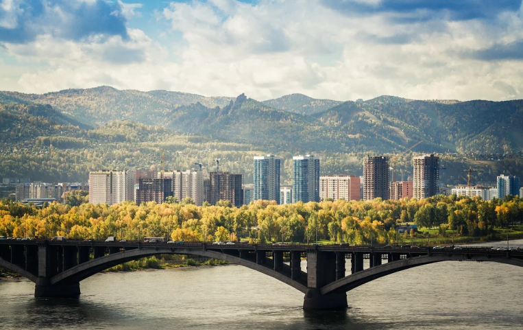
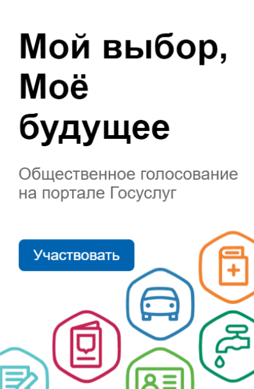

Красноярск
Администрация города
РУ
Главная
О городе
Новости
Онлайн-приемная обращений
Советник
Вакцинация

Подпись к фото, возможно новости
24.01.2022
Подпись к фото, возможно новости
24.01.2022
Подпись к фото, возможно новости
24.01.2022
Решения, принятые на заседании Правительства 21 января 2022 года
22.01.2022
В Красноярске определили подрядчика на выполнение ремонтных работ на ул. Пограничников
08.01.2022
Экономический форум-2022 «Экономика будущего страны»
22.12.2021
Читать все
Новости
Читать все
Решения, принятые на заседании Правительства 21 января 2022 года
22.01.2022
В Красноярске определили подрядчика на выполнение ремонтных работ на ул. Пограничников
08.01.2022
Экономический форум-2022 «Экономика будущего страны»
22.12.2021
Общественное мнение
Опросы
Публичные соглашения
Общественный контроль
